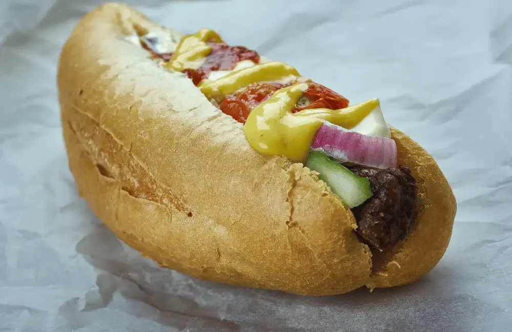
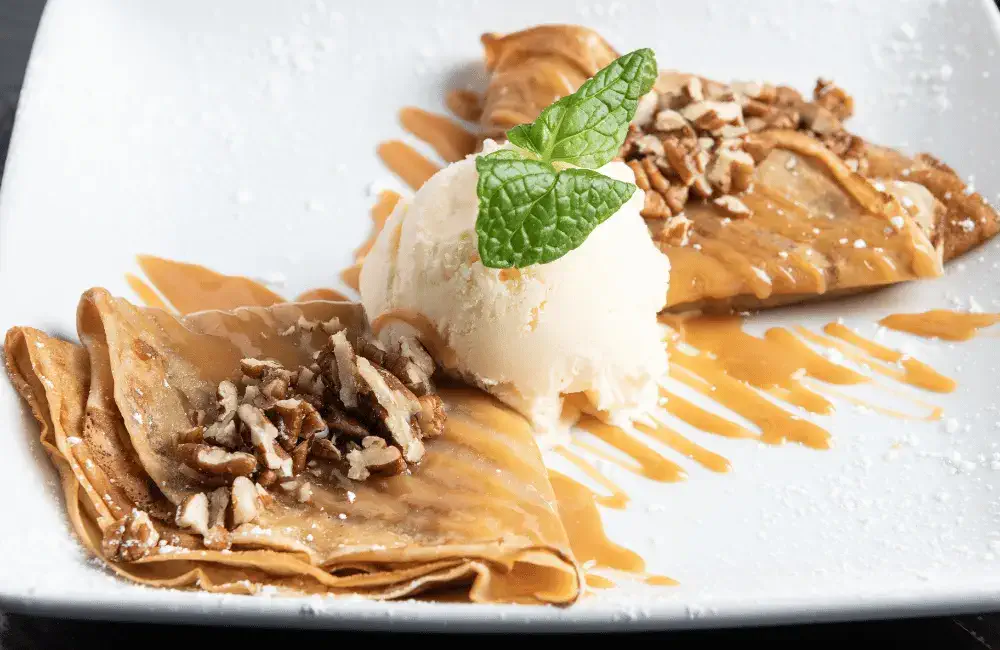
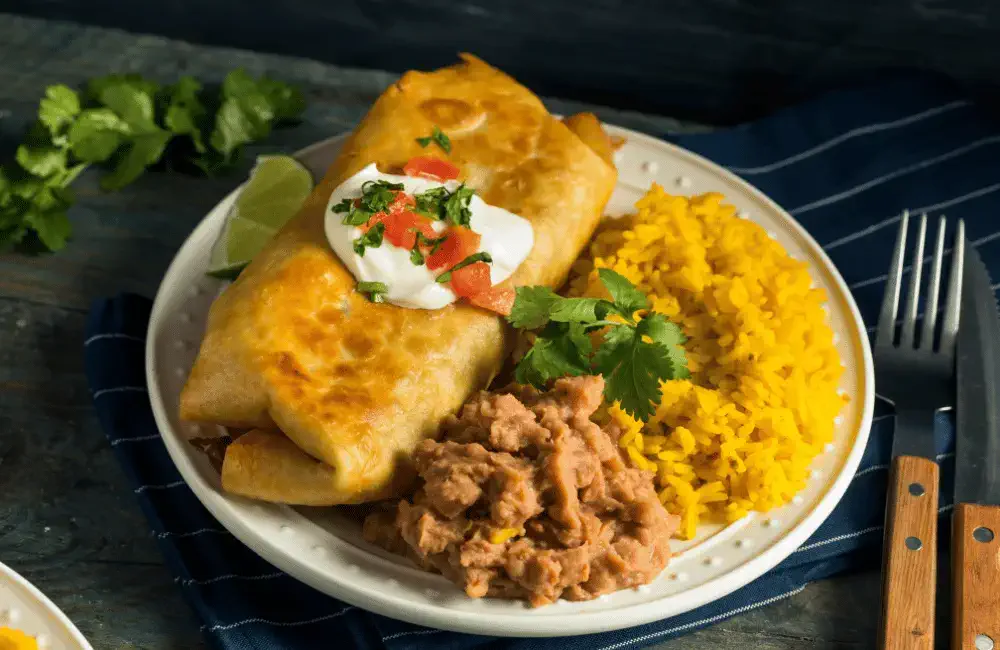

Tucson, Arizona is home to a wide variety of delicious treats for everyone to indulge in. From traditional Mexican cuisine to modern fusion dishes, Tucson has something to satisfy every taste. One of the most popular treats is the Sonoran Hot Dog, which is a bacon-wrapped hot dog cooked on a grill and topped with diced tomatoes and onions, mayonnaise, and jalapenos. Another favorite is the Mexican crepe, which is a thin, crispy crepe filled with cream cheese, strawberries, pecans, and honey. For those with a sweet tooth, Tucson offers a variety of desserts, such as the classic tres leches cake, churros, and the increasingly popular Mexican fried ice cream. Additionally, there is a wide variety of savory treats to indulge in as well, including the classic chimichanga. No matter what type of treat you are searching for, Tucson has something to satisfy your cravings.
The Sonoran hot dog is a delicious treat that originated in Mexico and has become a popular treat to indulge in Tucson. The ingredients for a Sonoran hot dog are simple and it is incredibly easy to make. To make a Sonoran hot dog, you will need a bacon-wrapped hot dog, a bun, mayonnaise, mustard, tomato, beans, and jalapenos. Start by wrapping the hot dog in bacon and grilling it. Place the hot dog in a bun and top it off with mayonnaise, mustard, tomato, beans, and jalapenos. The combination of flavors, textures, and spices gives the Sonoran hot dog its unique taste that is sure to tantalize your taste buds. The Sonoran hot dog is a great way to switch up the classic hot dog and is sure to be a hit with everyone! Be sure to check out Ruiz Hot Dogs Los Chipilones in Tucson to try one of the best Sonoran Hot Dogs you have ever tasted.
Mexican crepes are an incredibly delicious and easy-to-make breakfast or snack. To make Mexican crepes, all you need is flour, eggs, milk, butter, and a pinch of salt. You can also add a variety of ingredients for flavor such as cinnamon, sugar, nutmeg, and vanilla extract. Start by combining the flour, eggs, milk, butter, and salt in a large bowl and whisking until everything is combined and you have a smooth batter. Heat a non-stick skillet over medium heat and lightly grease the surface with butter. Ladle 1/4 cup of the batter onto the skillet and spread it out in a thin circle, being careful not to spread it too thin. Cook for about 1 minute until the edges start to brown, then flip and cook for another minute until the other side is lightly browned. To serve, simply top with your favorite toppings such as whipped cream, fruit, or chocolate chips. Mexican crepes are a delicious and easy way to start the day off right and are sure to be a hit with your family and friends. Be sure to visit Planet of the Crepes in Tucson for a delicate and delicious mexican crepe.
El Charro Cafe is widely considered to be the birthplace of the now famous chimichanga. As the story goes, Tia Monica Flin was busy frying her now famous El Charro ground beef tacos, when she accidentally dropped a burro into the frying pan. When the burro dropped in the pan, oil splashed everywhere and as she was about to lash out a common Spanish cuss word starting with “Ch” but because she was amongst her young nieces and nephews, changed it to “Chimichanga”, the equivalent of “thingamajig.”
